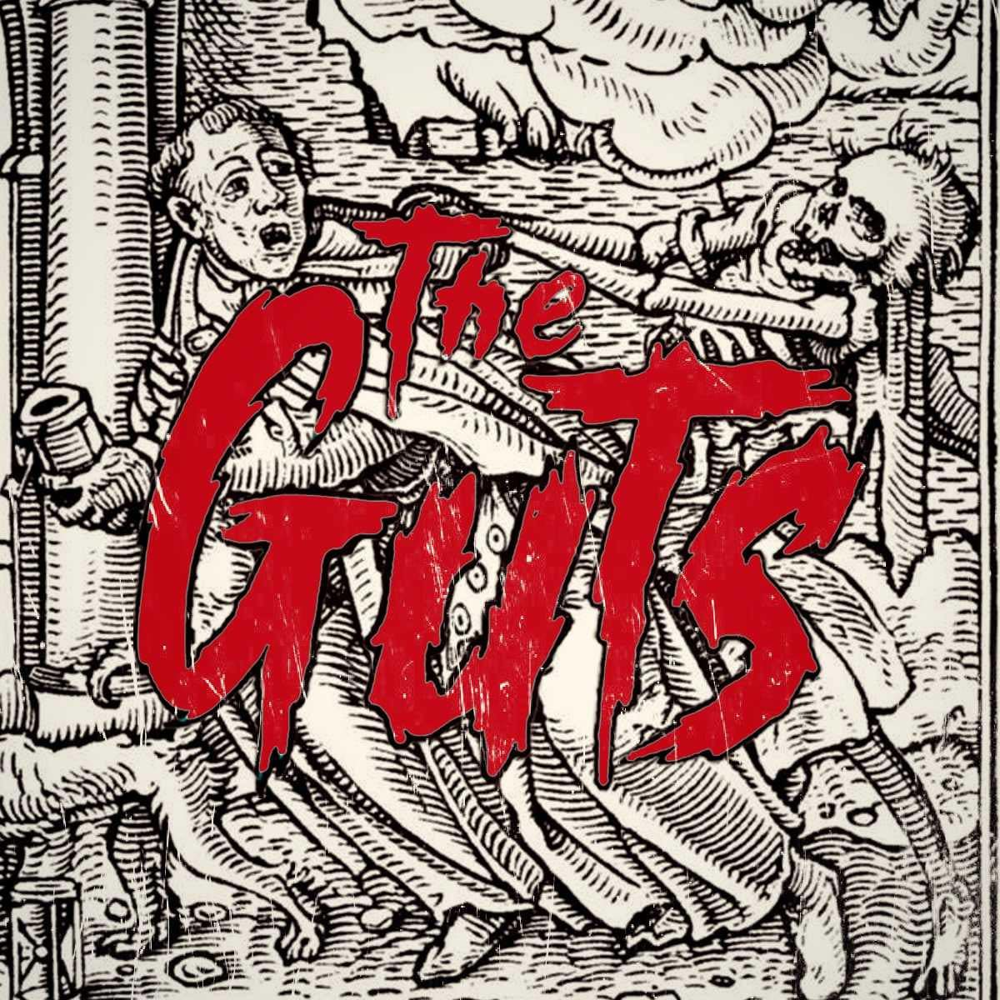

White Car Sessions
Nouvelle formation, nouvelle voix, même ossature. Une démo enregistrée au White Car Studio qui capture le quatuor dans son mode le plus brut — guitares épaisses, rythmique en avant, chant qui ne cherche pas la ligne propre mais la coupure nette.
La pochette emprunte à l'iconographie médiévale de la danse macabre. Rien d'ironique : le rock est une affaire de viscères, et il vaut mieux le dire.
Enregistré à White Car Studio
Formation Chris (chant), Frans (guitare), Lucas (basse), Kenny (batterie)
Formation Chris (chant), Frans (guitare), Lucas (basse), Kenny (batterie)